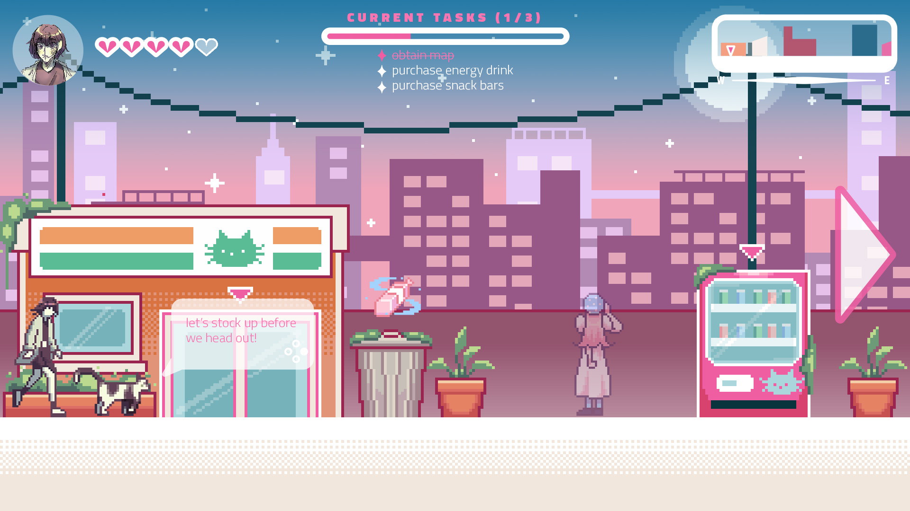

Solemn Skies
Set in an urban Asian city, the main character traverses through the city with a magical cat companion to find their missing friend. The game would be a point-and-click adventure with a focus on a colorful, magical and urban green aesthetic, inspired by my time in Shanghai and other East Asian cities. Vending machines would be checkpoints in the game. Growing up watching magical girl shows, I am drawn to the empowerment given to feminitity in these heroic stories. I wanted to have this game concept focus on similar values.
I created characters, assets and a mockup screen for Solemn Skies in order to get familiar with the game art pipeline and learn different tools. I first started with character concept art of the main character and her animal companion using a set color palette. I then moved on to create environment and UI mockups in Illustrator, and animating all of these pieces together in After Effects to get a sense of how the game would feel. After that, I created a pixel environment based on the environment mockup and a new character asset, which be close to final artwork in this mock game.
Short animation made in After Effects to showcase animated UI elements.